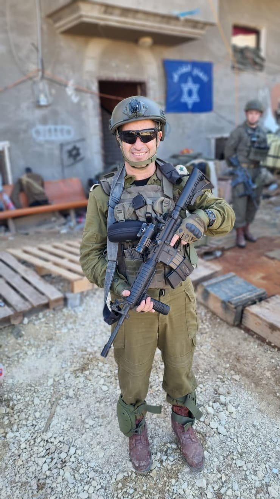

מנכ״ל
נריה מאיר
עו״ד
יזם ציוני
פעיל ציבור
יו״ר בית״ר העולמית (לשעבר)
ראש המחלקה לפעילות ציונית בתפוצות (לשעבר)
נריה מאיר מוביל את "בשבילנו" מתוך אמונה עמוקה בכוחו של הזיכרון לחבר בין ישראל לקהילות היהודיות בעולם. שנים ארוכות הוא עוסק בחיזוק הקשר עם יהדות התפוצות — כיו״ר בית״ר העולמית (2013–2021), שבמהלכן הוקמו מעוזים חדשים של התנועה בצרפת, ברזיל, אוקראינה ועוד — ובהמשך כראש המחלקה לפעילות ציונית בתפוצות בהסתדרות הציונית העולמית.
עורך דין בהשכלתו ובעל תואר שני במדיניות ציבורית, נריה הקים את מוזיאון "פלוגת הכותל" בירושלים, ופועל מתוך תחושת שליחות מתמדת לחיזוק הזהות, החוסן והערבות ההדדית בעם היהודי.
במלחמת חרבות ברזל יצא נריה להילחם כלוחם מילואים בחטיבה 55, חטיבת הצנחנים — מאותו מקום של נתינה ואחריות שממנו צמח "בשבילנו".
נריה נשוי ואב לחמישה, מתגורר ברחלים, ובשנת 2014 תרם כליה לאחיו — חיים שכולם מעשה מתמשך של נתינה.